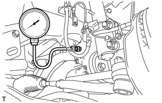

RM3140CG
_51
发动机/混合动力系统
_023955
1ZR-FE 润滑系统
_0116618
润滑系统
G
1ZR-FE 润滑系统 润滑系统 车上检查
程序

 1.检查发动机机油油位
1.检查发动机机油油位
a.
使发动机暖机，然后停止发动机并等待 5 分钟。
b.
检查并确认发动机机油油位处于发动机机油尺的低油位和满油位标记之间。
如果油位低，则检查发动机机油是否漏油并加注发动机机油至满油位标记处。
- 备注：
-
加注发动机机油时，油位不要高于满油位标记。
2.检查发动机机油质量
a.
检查发动机机油是否变质、油中是否混水、变色或变稀。
如果质量明显低劣，则更换发动机机油和机油滤清器滤芯。
3.检查发动机机油压力
a.
拆下发动机机油压力开关总成。
单击此处 发动机/混合动力系统>1ZR-FE 润滑系统>机油压力开关>拆卸201406,999999,_51,_023955,_0116620,RM100000000DAQI,
- 注意事项：
-
拆下发动机机油压力开关总成时，确保发动机冷机以防被高温发动机机油烫伤。
b.

用适配工具安装机油压力表。
c.
发动机暖机。
- 提示：
-
发动机暖机后，发动机冷却液温度为 75 至 100°C（167 至 212°F）。
d.
检查机油压力。
- 标准机油压力:
发动机状态 机油压力 怠速运转 25 kPa (0.3 kgf/cm2, 3.6 psi) 或更高 3,000 rpm 150 至 550 kPa（1.5 至 5.6 kgf/cm2，22 至 80 psi）
如果结果不符合规定，则检查发动机机油的质量并检查油道是否阻塞。如有必要，则进行维修或更换。如果机油压力不符合规定，则检查机油泵总成。
单击此处 发动机/混合动力系统>1ZR-FE 润滑系统>油泵>检查201406,999999,_51,_023955,_0116621,RM100000000DAQK,
e.
用适配工具拆下机油压力表。
- 注意事项：
-
拆下机油压力表时，确保发动机冷机以防被高温发动机机油烫伤。
f.